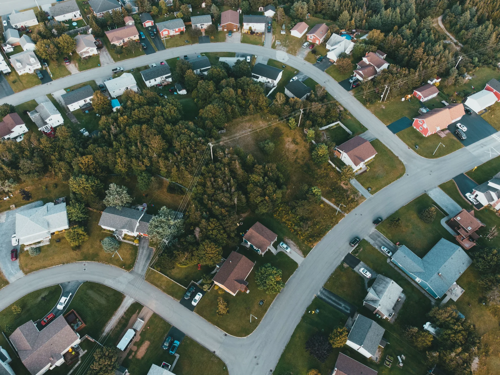

Understand the property
Clarify what the audience needs to see: key features, room connections, the setting, or the overall layout. Let those needs guide the choice of media.
Connecting photography, aerial perspectives, and spatial technology to help people understand a property.

People need to understand how a property feels, how rooms connect, and where it sits in the world. A single viewpoint can only tell part of that story.
Through Geaux Flight, I produce real estate photography, aerial imagery, walkthrough videos, and 360-degree experiences. Each medium answers a different question, from the character of a room to the relationship between a home and its surroundings.
This project presents my business and the approach behind its media work. The photographs on this website are credited visual references; this is not a case study of a specific client property.
Clarify what the audience needs to see: key features, room connections, the setting, or the overall layout. Let those needs guide the choice of media.
Use interior and exterior photography for detail, aerial imagery for context, and walkthroughs or 360-degree tours for a sense of movement through the space.
Think through how the media will be viewed and shared. The goal is a clear, coherent property presentation that helps people ask better questions and explore further.
Photogrammetry reconstructs three-dimensional information from overlapping photographs.
I use this technique to create 3D models that help explain property features and spatial relationships. It is a natural connection between my interest in media and my studies in information systems.
Running Geaux Flight brings creative decisions and business decisions together.
The project continues to shape how I approach business and technology: understand the need, choose the right tools, and make the result useful.